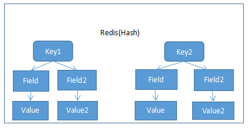
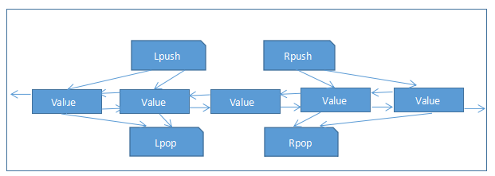
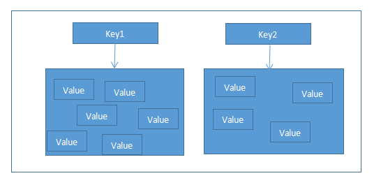

Redis 详细见上一个章节
我们接下来操作的命令用的是Redis自带的客户端工具，在安装redis的目录下面有个redis-cli的，我们启动它即可，启动之前要先启动redis喔！
[root@VM_0_10_centos bin]# ll
total 15524
-rw-r--r-- 1 root root 18 Sep 30 19:48 dump.rdb
-rwxr-xr-x 1 root root 4588958 Sep 30 11:11 redis-benchmark
-rwxr-xr-x 1 root root 22249 Sep 30 11:11 redis-check-aof
-rwxr-xr-x 1 root root 45459 Sep 30 11:11 redis-check-dump
-rwxr-xr-x 1 root root 4691881 Sep 30 11:11 redis-cli
-rw-r--r-- 1 root root 41404 Sep 30 11:15 redis.conf
lrwxrwxrwx 1 root root 12 Sep 30 11:11 redis-sentinel -> redis-server
-rwxr-xr-x 1 root root 6450265 Sep 30 11:11 redis-server
[root@VM_0_10_centos bin]# ./redis-cli
127.0.0.1:6379>
String也是Redis最重要最简单，也是我们最常用的一个数据类型
Redis 字符串是字节序列。Redis 字符串是二进制安全的，这意味着他们有一个已知的
长度没有任何特殊字符终止，所以你可以存储任何东西，512 兆为上限
示例：
redis 127.0.0.1:6379> SET name kevin
OK
redis 127.0.0.1:6379> GET name
"kevin"
127.0.0.1:6379> set num 10
OK
127.0.0.1:6379> incr num
(integer) 11
127.0.0.1:6379> get num
"11"
127.0.0.1:6379> incrby num 10
(integer) 21
127.0.0.1:6379> get num
"21"
127.0.0.1:6379> incrbyfloat num 20
"41"
127.0.0.1:6379> get num
"41"
127.0.0.1:6379> incrbyfloat num 10.1
"51.1"
127.0.0.1:6379> get num
"51.1"
127.0.0.1:6379> set name arebirth
OK
127.0.0.1:6379> append name ||arebirth
(integer) 18
127.0.0.1:6379> get name
"arebirth||arebirth"
127.0.0.1:6379> mset key val k2 v2
OK
127.0.0.1:6379> mget key k2
1) "val"
2) "v2"
127.0.0.1:6379> del num
(integer) 1
127.0.0.1:6379> get num
(nil)
127.0.0.1:6379> flushdb
OK
127.0.0.1:6379> get k2
(nil)
127.0.0.1:6379> 
Redis 的哈希是键值对的集合。 Redis 的哈希值是字符串字段和字符串值之间的映射，
因此它们被用来表示对象，看起来很抽象，我们来实际操作下就知道啦！
示例：
127.0.0.1:6379> hset user username arebirth
(integer) 1
127.0.0.1:6379> hget user username
"arebirth"
127.0.0.1:6379> hmset user pwd 123456 age 17
OK
127.0.0.1:6379> hmget user pwd age
1) "123456"
2) "17"
127.0.0.1:6379> hexists user aa
(integer) 0
127.0.0.1:6379> hexists user username
(integer) 1
127.0.0.1:6379> hdel user age
(integer) 1
127.0.0.1:6379> hget user age
(nil)
127.0.0.1:6379> hgetall user
1) "username"
2) "arebirth"
3) "pwd"
4) "123456"
127.0.0.1:6379> hvals user
1) "arebirth"
2) "123456"
127.0.0.1:6379> hkeys user
1) "username"
2) "pwd"
127.0.0.1:6379> hlen user
(integer) 2
Redis 的链表是简单的字符串列表，排序插入顺序。您可以添加元素到 Redis 的列表的
头部或尾部跟我们Java中的ListLink很像，双向链表
示例：
127.0.0.1:6379> clear
127.0.0.1:6379> lpush chain 1
(integer) 1
127.0.0.1:6379> lpush chain 2
(integer) 2
127.0.0.1:6379> lpush chain 3
(integer) 3
127.0.0.1:6379> rpush chain 4
(integer) 4
127.0.0.1:6379> rpush chain 5
(integer) 5
127.0.0.1:6379> rpush chain 6
(integer) 6
127.0.0.1:6379> lrange chain 0 -1
1) "3"
2) "2"
3) "1"
4) "4"
5) "5"
6) "6"
127.0.0.1:6379> lpop chain
"3"
127.0.0.1:6379> rpop chain
"6"
127.0.0.1:6379> lrange chain 0 -1
1) "2"
2) "1"
3) "4"
4) "5"
127.0.0.1:6379> llen chain
(integer) 4
127.0.0.1:6379> lindex chain 2
"4"
127.0.0.1:6379> lset chain 2 5
OK
127.0.0.1:6379> lindex chain 2
"5"

Redis 的集合是字符串的无序集合。
示例：
127.0.0.1:6379> sadd opr a
(integer) 1
127.0.0.1:6379> sadd opr a
(integer) 0
127.0.0.1:6379> sadd opr b
(integer) 1
127.0.0.1:6379> scard opr
(integer) 2
127.0.0.1:6379> smembers opr
1) "b"
2) "a"
127.0.0.1:6379> sismember opr a
(integer) 1
127.0.0.1:6379> sismember opr b
(integer) 1
127.0.0.1:6379> srem opr a
(integer) 1
127.0.0.1:6379> smembers opr
1) "b"Redis 的有序集合类似于 Redis 的集合，字符串不重复的集合
我们可以自行设置它的排序顺序，通过指定大小值
示例：
127.0.0.1:6379> zadd score 1 a
(integer) 1
127.0.0.1:6379> zadd score 0.1 b
(integer) 1
127.0.0.1:6379> zadd score 2 c
(integer) 1
127.0.0.1:6379> zrange core 0 -1
(empty list or set)
127.0.0.1:6379> zrange score 0 -1
1) "b"
2) "a"
3) "c"
127.0.0.1:6379> zrange score 0 -1 withscores
1) "b"
2) "0.10000000000000001"
3) "a"
4) "1"
5) "c"
6) "2"
127.0.0.1:6379> zremrangebyscore score 0 10
(integer) 3
127.0.0.1:6379> zrange score 0 -1 withscores
(empty list or set)
示例：
127.0.0.1:6379> ping
PONG
127.0.0.1:6379> echo arebirth
"arebirth"
127.0.0.1:6379> keys *
(empty list or set)
127.0.0.1:6379> set a a
OK
127.0.0.1:6379> keys *
1) "a"
127.0.0.1:6379> exists a
(integer) 1
127.0.0.1:6379> exists aa
(integer) 0
127.0.0.1:6379> expire a 20
(integer) 1
127.0.0.1:6379> ttl a
(integer) 18
127.0.0.1:6379> tt a
(error) ERR unknown command 'tt'
127.0.0.1:6379> ttl a
(integer) 14
127.0.0.1:6379> ttl a
(integer) 11
127.0.0.1:6379> persist a
(integer) 1
127.0.0.1:6379> ttl a
(integer) -1
127.0.0.1:6379> expire a 5
(integer) 1
127.0.0.1:6379> ttl a
(integer) 4
127.0.0.1:6379> ttl a
(integer) -2
127.0.0.1:6379> exists a
(integer) 0
127.0.0.1:6379> select 1
OK
127.0.0.1:6379[1]> set aa aa
OK
127.0.0.1:6379[1]> move aa 0
(integer) 1
127.0.0.1:6379[1]> dbsize
(integer) 0
127.0.0.1:6379[1]> select 0
OK
127.0.0.1:6379> dbsize
(integer) 1
127.0.0.1:6379> keys *
1) "aa"
127.0.0.1:6379> info
# Server
redis_version:3.0.0
redis_git_sha1:00000000
redis_git_dirty:0
redis_build_id:3477127313654848
redis_mode:standalone
os:Linux 2.6.32-642.6.2.el6.x86_64 x86_64
arch_bits:64
multiplexing_api:epoll
gcc_version:4.4.7
process_id:26037
run_id:65435cbd205e87a262b28d0823d004786c69470e
tcp_port:6379
uptime_in_seconds:685095
uptime_in_days:7
hz:10
lru_clock:10217642
config_file:/usr/local/redis/bin/redis.conf
# Clients
connected_clients:1
client_longest_output_list:0
client_biggest_input_buf:0
blocked_clients:0
# Memory
used_memory:819424
used_memory_human:800.22K
used_memory_rss:2789376
used_memory_peak:839392
used_memory_peak_human:819.72K
used_memory_lua:35840
mem_fragmentation_ratio:3.40
mem_allocator:jemalloc-3.6.0
# Persistence
loading:0
rdb_changes_since_last_save:6
rdb_bgsave_in_progress:0
rdb_last_save_time:1570498470
rdb_last_bgsave_status:ok
rdb_last_bgsave_time_sec:0
rdb_current_bgsave_time_sec:-1
aof_enabled:0
aof_rewrite_in_progress:0
aof_rewrite_scheduled:0
aof_last_rewrite_time_sec:-1
aof_current_rewrite_time_sec:-1
aof_last_bgrewrite_status:ok
aof_last_write_status:ok
# Stats
total_connections_received:129
total_commands_processed:1523
instantaneous_ops_per_sec:0
total_net_input_bytes:16512536
total_net_output_bytes:94988
instantaneous_input_kbps:0.00
instantaneous_output_kbps:0.00
rejected_connections:0
sync_full:0
sync_partial_ok:0
sync_partial_err:0
expired_keys:1
evicted_keys:0
keyspace_hits:144
keyspace_misses:18
pubsub_channels:0
pubsub_patterns:0
latest_fork_usec:232
migrate_cached_sockets:0
# Replication
role:master
connected_slaves:0
master_repl_offset:0
repl_backlog_active:0
repl_backlog_size:1048576
repl_backlog_first_byte_offset:0
repl_backlog_histlen:0
# CPU
used_cpu_sys:424.19
used_cpu_user:202.10
used_cpu_sys_children:0.00
used_cpu_user_children:0.00
# Cluster
cluster_enabled:0
# Keyspace
db0:keys=1,expires=0,avg_ttl=0
127.0.0.1:6379> flushdb
OK
127.0.0.1:6379> flushall
OK
127.0.0.1:6379> quit
Redis里面的命令，非常多，但是常用的也差不多就这些，有感兴趣的可以自行百度